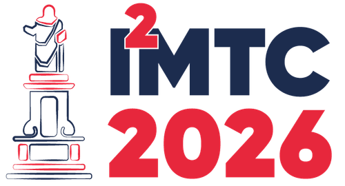
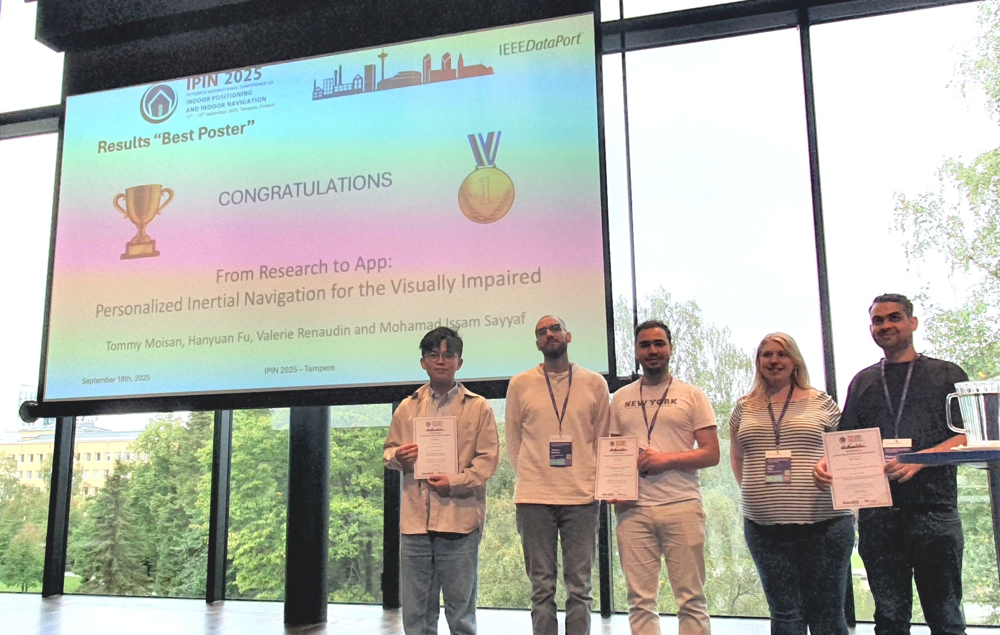
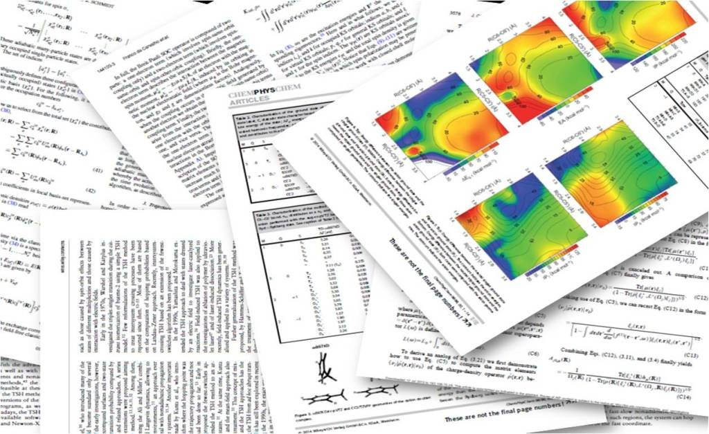
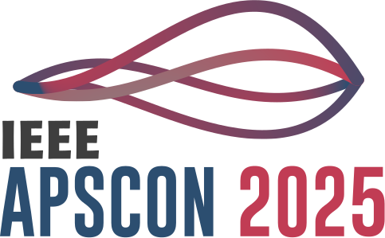
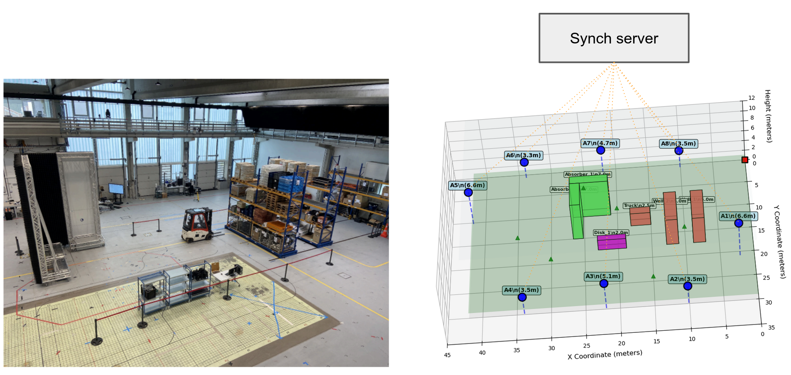
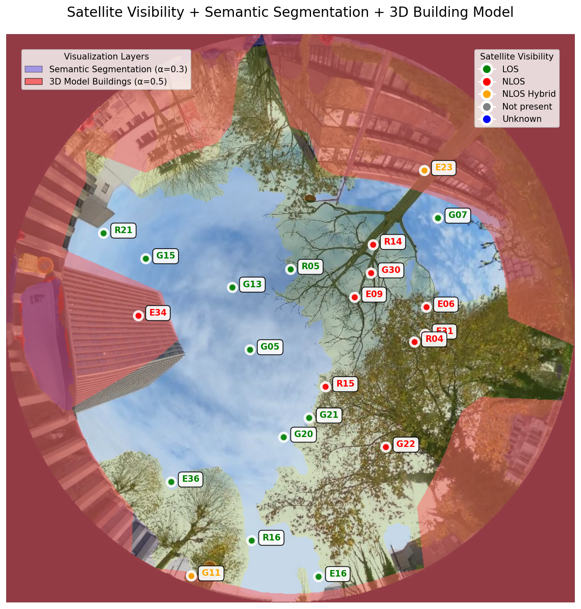
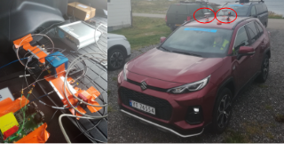
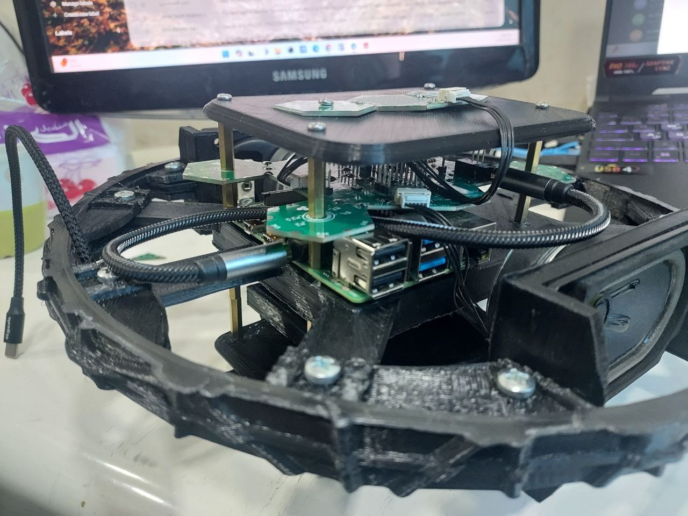
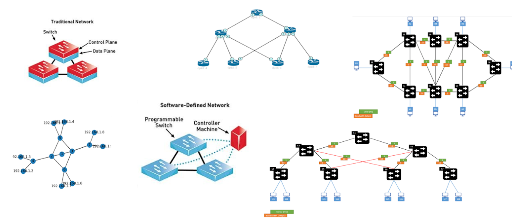
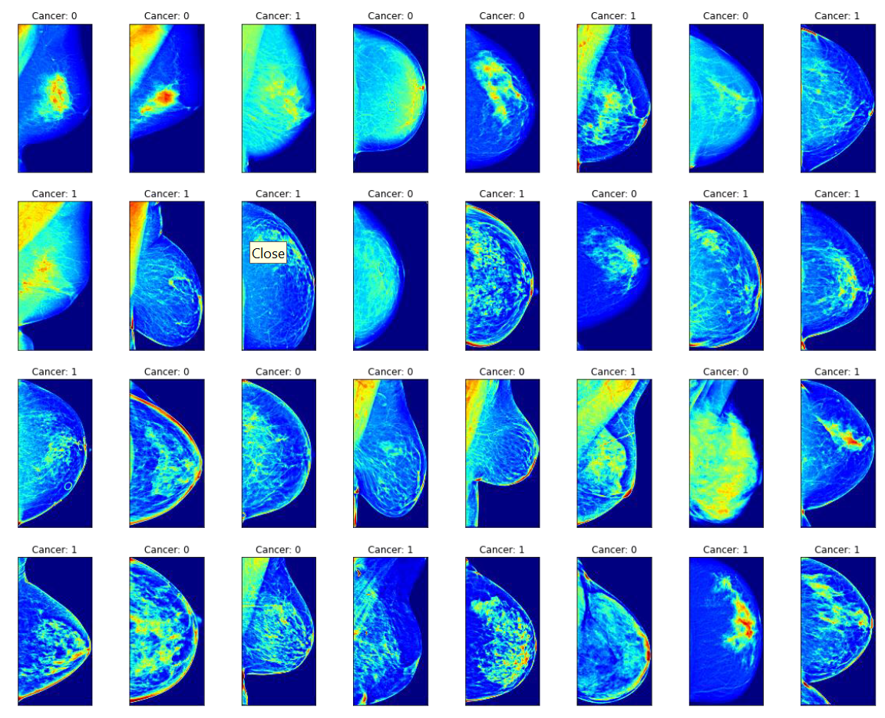

Mohamad Issam Sayyaf
PhD Candidate — Signal Processing & Embedded Systems
GEOLOC Laboratory, Université Gustave Eiffel, Nantes, France




Physics-informed anomaly detection for multi-modal navigation systems (IMU, GNSS, 5G, Wi-Fi).
Focus on embedded systems, wireless communications, and IoT measurement systems.

Developed a robust step detection system enhanced by anomaly filtering. Uses segment-based autoencoders to distinguish genuine walking signals from motion-induced false steps (mimic walking), improving pedestrian dead reckoning accuracy.

Semi-supervised anomaly detection for 5G indoor positioning using Channel Impulse Response (CIR) analysis. Achieved F1=0.87 with only 750 parameters, making the model suitable for embedded deployment on resource-constrained devices.

Validated the unified four-step methodology on GNSS tracking loop observables (Nantes and Paris datasets). Multi-architecture comparison (Baseline AE, Residual AE, VAE, DeepWeighted AE) with adaptive KDE-based thresholding and probabilistic LOS confidence mapping.

Participated in the Jammertest 2024 data collection campaign in Norway. Collected 819 minutes of GNSS recordings under controlled jamming, spoofing, and meaconing attacks at various power levels. Published the dataset on Zenodo (845 views, 227 downloads).
View on Zenodo →
Comprehensive investigation of the escalating GNSS threat crisis through real-world case studies covering aviation, maritime, and military domains. Documented how attacks increased sevenfold in contested regions and analyzed the experimental dataset from Jammertest 2024.

Comprehensive survey of 43 papers (2019–2025) covering Transformers, GNNs, and Attention-based architectures for time-series anomaly detection. Proposed a 6-category taxonomy and identified critical gaps in computational cost reporting and uncertainty quantification.

Full custom Linux distribution for STM32MP1 with complete boot chain (TF-A, OP-TEE, U-Boot), custom Yocto layers, device drivers (GPIO, I2C, SPI, UART), device tree overlays, and OTA update system using SWUpdate with A/B partition scheme.

Custom Yocto-based Linux image for NXP i.MX93 platform targeting truck monitoring. Implemented CAN bus, 5G modem, and GNSS drivers with KAS-managed build configuration and full boot chain customization.

C++ embedded mini-server (Stener) for the Muzziball device on STM32MP157-DK. Orchestrates serial communication with IMU, LiPo battery, and LED matrix while bridging data exchange between PureData, BLE, and Wi-Fi interfaces.

Custom IIO subsystem driver for the MPU-6050 IMU sensor with I2C communication, interrupt handling, and sysfs interface for real-time accelerometer and gyroscope data acquisition.
Linux kernel serial device driver for u-blox GNSS receiver, parsing NMEA sentences and exposing position data through the kernel subsystem.

Hardware reverse engineering of a TP-Link router (MT7628 SoC): identified UART and SPI interfaces, extracted firmware via SPI flash dump, performed binwalk analysis, and planned firmware modification.

Designed and realized a wireless crack detection sensor based on IoT and acoustic emission. Developed the complete system: hardware design, edge device firmware, communication protocols, and cloud integration for structural health monitoring.
View Thesis →
Implemented Dijkstra and Bellman-Ford algorithms on RYU SDN controller for load-balanced face recognition video streaming over wireless networks.
View on GitHub →
Deep learning pipeline for mammogram-based breast cancer screening using the RSNA dataset, with preprocessing and model training in PyTorch.
View on GitHub →Led 50+ lab sessions for 150+ students in antenna design (HFSS/CST), microwave engineering, and RF systems